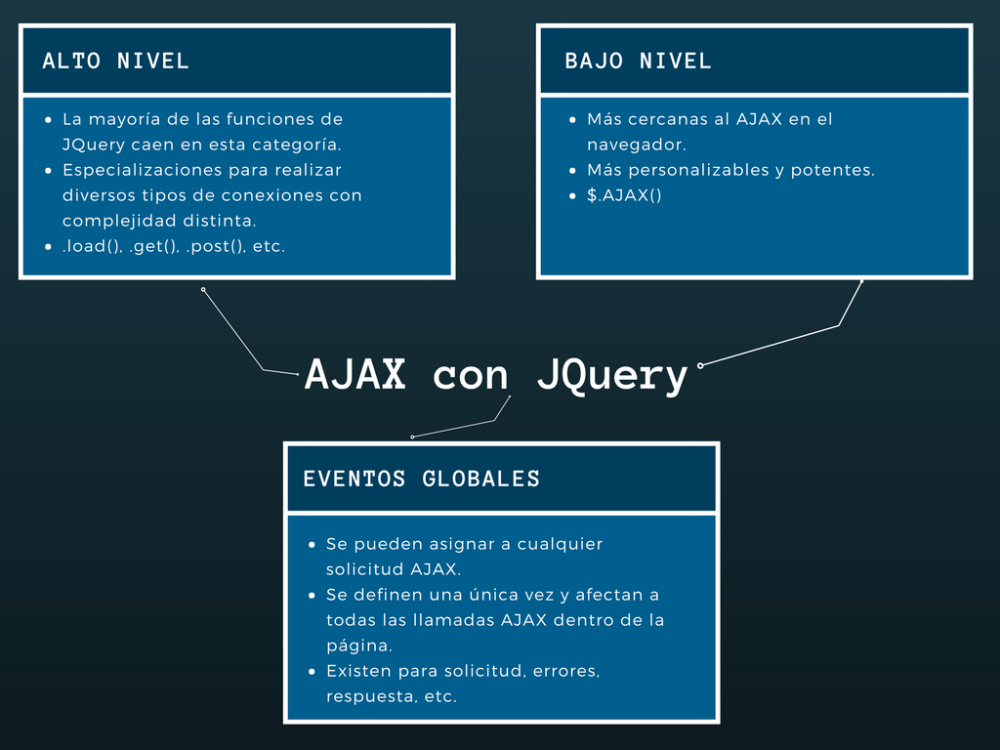

    <div class="divider"></div>
    <div class="section">
      <button class="waves-effect btn-flat">Mostrar preguntas</button>
    </div>
    <div class="section" id="preguntas">
      <div class="row">
        <div class="col s12">
          <h5>¿Cómo funciona AJAX con JQuery?</h5>

          

          <h5>¿Qué alternativas a JQuery existen?</h5>

          Algunas alternativas son: Prototyper, Ext, Dojo Toolkit, entre otras.

        </div>
      </div>
    </div>
  </div>
</main>
